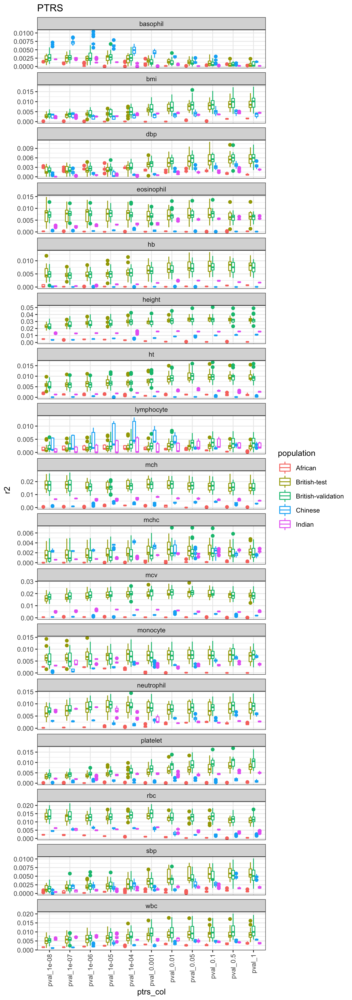
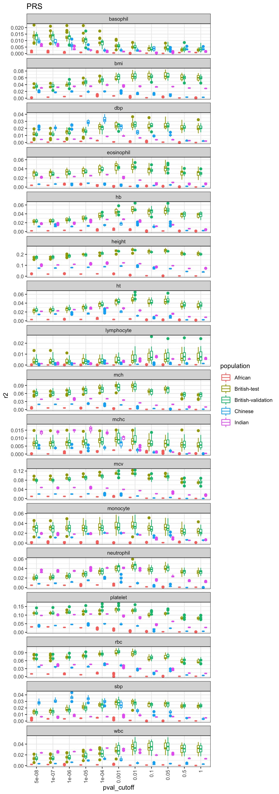

First look at PTRS / PRS
library(dplyr)
library(data.table)
library(ggplot2)
options(stringsAsFactors = F)
parse_pop = function(x) {
x = unlist(lapply(strsplit(x, '-'), function(y) {
if(length(y) > 1) {
return(paste0(y[1], '-', y[2]))
} else {
return(y)
}
}))
}1 Load results
1.1 PTRS
traits = tolower(read.csv('../external_data/martin_et_al_2019ng_table_s6.csv')$Trait)
diag_df = data.frame(trait = traits, index = 1 : 17)
result = list()
for(i in 1 : 17) {
for(t in traits) {
filename = paste0('~/Desktop/tmp/ptrs_r2/ptrs-r2_subset', i, '_x_', t, '.txt')
tmp = read.table(filename, header = T, sep = '\t')
result[[length(result) + 1]] = tmp %>% mutate(subset = i, trait = t)
}
}
df_result = do.call(rbind, result)
df_result$population = parse_pop(df_result$population)
df_result$ptrs_col = factor(df_result$ptrs_col, levels = unique(df_result$ptrs_col))1.2 PRS
collector = list()
for(i in 1 : 3) {
filename1 = paste0('~/Desktop/tmp/prs_r2/ptrs_r2_subset', i, '.txt')
filename2 = paste0('~/Desktop/tmp/prs_r2/prs_r2_subset', i, '.txt')
if(file.exists(filename1)) {
tmp = read.table(filename1, header = T, sep = '\t')
} else if(file.exists(filename2)) {
tmp = read.table(filename2, header = T, sep = '\t')
}
collector[[length(collector) + 1]] = tmp %>% mutate(subset = i)
}
for(i in 4 : 17) {
for(t in traits) {
filename1 = paste0('~/Desktop/tmp/prs_r2/ptrs_r2_subset', i, '_x_', t, '.txt')
filename2 = paste0('~/Desktop/tmp/prs_r2/prs_r2_subset', i, '_x_', t, '.txt')
if(file.exists(filename1)) {
tmp = read.table(filename1, header = T, sep = '\t')
} else if(file.exists(filename2)) {
tmp = read.table(filename2, header = T, sep = '\t')
}
collector[[length(collector) + 1]] = tmp %>% mutate(subset = i)
}
}
df_result_prs = do.call(rbind, collector)
df_result_prs$population = parse_pop(df_result_prs$population)
df_result_prs$pval_cutoff = factor(df_result_prs$pval_cutoff, levels = unique(df_result_prs$pval_cutoff))2 Plot
2.1 PRS
df_result %>% ggplot() + geom_boxplot(aes(x = ptrs_col, y = r2, color = population)) + facet_wrap(~trait, ncol = 1, scales = 'free_y') + theme(axis.text.x = element_text(angle = 90, hjust = 1, vjust = 0.5)) + ggtitle('PTRS')
2.2 PRS
df_result_prs %>% ggplot() + geom_boxplot(aes(x = pval_cutoff, y = r2, color = population)) + facet_wrap(~trait, ncol = 1, scales = 'free_y') + theme(axis.text.x = element_text(angle = 90, hjust = 1, vjust = 0.5)) + ggtitle('PRS')
3 “Best British” model
3.1 PTRS
best_british_ptrs = best_model_based_on_one(df_result, 'British-validation', 'ptrs_col', 'r2')
best_british_ptrs$perf_in_all %>%
filter(paste(trait, subset) %in% paste(diag_df$trait, diag_df$index)) %>%
ggplot() +
geom_violin(aes(x = population, y = transferability)) +
geom_jitter(aes(x = population, y = transferability), width = 0.2, height = 0)
3.2 PRS
best_british_prs = best_model_based_on_one(df_result_prs, 'British-validation', 'pval_cutoff', 'r2')
best_british_prs$perf_in_all %>%
filter(paste(trait, subset) %in% paste(diag_df$trait, diag_df$index)) %>%
ggplot() +
geom_violin(aes(x = population, y = transferability)) +
geom_jitter(aes(x = population, y = transferability), width = 0.2, height = 0)
3.3 Best British model: PTRS vs PRS
best_british_join = inner_join(best_british_ptrs$perf_in_all %>% select(-ptrs_col), best_british_prs$perf_in_all %>% select(-pval_cutoff), by = c('population', 'trait', 'subset'), suffix = c('_ptrs', '_prs'))
best_british_join %>%
filter(paste(trait, subset) %in% paste(diag_df$trait, diag_df$index)) %>%
ggplot() + geom_point(aes(x = r2_prs, y = r2_ptrs)) + facet_wrap( ~ population, scales = 'free') +
geom_abline(slope = 0.2, intercept = 0) +
ggtitle('R2')
best_british_join %>%
filter(paste(trait, subset) %in% paste(diag_df$trait, diag_df$index)) %>%
ggplot() + geom_point(aes(x = transferability_prs, y = transferability_ptrs)) + facet_wrap( ~ population, scales = 'free') +
geom_abline(slope = 1, intercept = 0) +
ggtitle('Transferability')
4 “Best” model
4.1 PTRS
best_each_ptrs = best_model_for_each(df_result, 'British-validation', 'ptrs_col', 'r2')
best_model = df_result %>% group_by(trait, subset, population) %>% summarize(best_model = ptrs_col[which.max(r2)])
best_each_ptrs$perf_in_all %>%
filter(paste(trait, subset) %in% paste(diag_df$trait, diag_df$index)) %>%
ggplot() + geom_violin(aes(x = population, y = transferability)) +
geom_jitter(aes(x = population, y = transferability), height = 0, width = 0.2)
4.2 PRS
best_each_prs = best_model_for_each(df_result_prs, 'British-validation', 'pval_cutoff', 'r2')
best_model = df_result %>% group_by(trait, subset, population) %>% summarize(best_model = ptrs_col[which.max(r2)])
best_each_prs$perf_in_all %>%
filter(paste(trait, subset) %in% paste(diag_df$trait, diag_df$index)) %>%
ggplot() + geom_violin(aes(x = population, y = transferability)) +
geom_jitter(aes(x = population, y = transferability), height = 0, width = 0.2)
4.3 Best model within each population: PTRS vs PRS
best_each_join = inner_join(best_each_ptrs$perf_in_all %>% select(-ptrs_col), best_each_prs$perf_in_all %>% select(-pval_cutoff), by = c('population', 'trait', 'subset'), suffix = c('_ptrs', '_prs'))
best_each_join %>%
filter(paste(trait, subset) %in% paste(diag_df$trait, diag_df$index)) %>%
ggplot() + geom_point(aes(x = r2_prs, y = r2_ptrs)) + facet_wrap( ~ population, scales = 'free') +
geom_abline(slope = 0.2, intercept = 0) +
ggtitle('R2')
best_each_join %>%
filter(paste(trait, subset) %in% paste(diag_df$trait, diag_df$index)) %>%
ggplot() + geom_point(aes(x = transferability_prs, y = transferability_ptrs)) + facet_wrap( ~ population, scales = 'free') +
geom_abline(slope = 1, intercept = 0) +
ggtitle('Transferability')
5 Regulability/heritability vs. PTRS/PRS
regu = readRDS('../analysis_output/regulability_ctimp.rds')
regu$population = parse_pop(regu$population)
best_each_join_cleaned = best_each_join %>%
filter(paste(trait, subset) %in% paste(diag_df$trait, diag_df$index))
best_british_join_cleaned = best_british_join %>%
filter(paste(trait, subset) %in% paste(diag_df$trait, diag_df$index))
best_each_join_cleaned = inner_join(best_each_join_cleaned, regu, by = c('trait', 'population'))
best_british_join_cleaned = inner_join(best_british_join_cleaned, regu, by = c('trait', 'population'))
best_each_join_cleaned %>% ggplot() + geom_point(aes(x = h_sq, y = r2_ptrs)) + facet_wrap(~population) + ggtitle('Best model within each population')## Warning: Removed 8 rows containing missing values (geom_point).
best_british_join_cleaned %>% ggplot() + geom_point(aes(x = h_sq, y = r2_ptrs)) + facet_wrap(~population) + ggtitle('Best British model')## Warning: Removed 8 rows containing missing values (geom_point).
heri = readRDS('../analysis_output/hsq_neale_lab.rds')
best_each_join_cleaned = inner_join(best_each_join_cleaned, heri %>% select(h2_observed, trait), by = c('trait'))
best_british_join_cleaned = inner_join(best_british_join_cleaned, heri %>% select(h2_observed, trait), by = c('trait'))
best_each_join_cleaned %>% ggplot() + geom_point(aes(x = h2_observed, y = r2_prs)) + facet_wrap(~population) + ggtitle('Best model within each population')
best_british_join_cleaned %>% ggplot() + geom_point(aes(x = h2_observed, y = r2_prs)) + facet_wrap(~population) + ggtitle('Best British model')